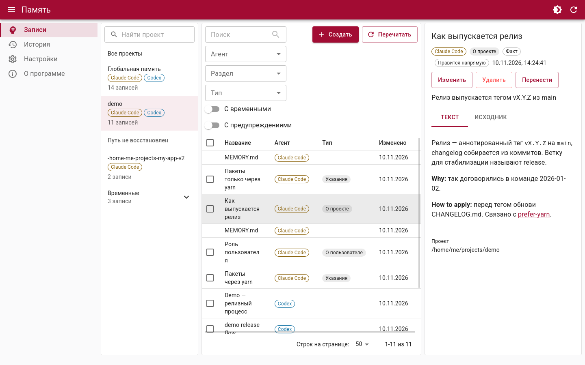
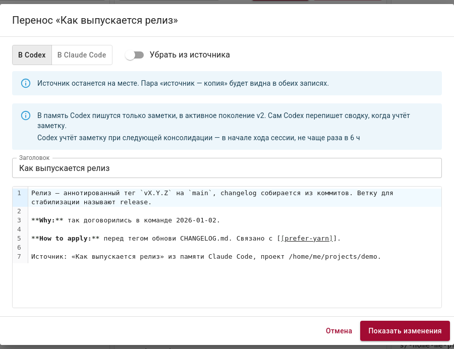

Память ваших агентов — в одном окне
ai-memory показывает, что Claude Code и Codex запомнили о ваших проектах, даёт поправить это с предпросмотром и откатом и перенести знание от одного агента к другому.

Скриншоты — на демо-данных из тестов ai-memory.
Два агента — две памяти
Если чередовать Claude Code и Codex, у каждого копится своя память, а другой её не видит. Вывод, сделанный в одном, приходится повторять в другом, а навести порядок можно только руками в файлах разных форматов. ai-memory не заводит ещё одну память — он работает прямо с родными файлами агентов.
| Агент | Где лежит память | Как ai-memory пишет |
|---|---|---|
| Claude Code | ~/.claude*/projects/<проект>/memory/*.md и индекс MEMORY.md | напрямую: файл факта и строка в индексе |
| Codex | ~/.codex/memories_v2/ — сводки, которые генерирует сам Codex | только заметками в extensions/ad_hoc/notes/; Codex сам вливает их в память |
Что умеет
Всё, что агенты знают о проекте, — рядом: факты памяти, инструкции и навыки обоих агентов.
Просмотр и поиск
Память обоих агентов по проектам, фильтры по агенту, разделу и типу, полнотекстовый поиск.
Правка с откатом
Создание, правка и удаление фактов Claude, заметки в Codex. Перед записью — diff, после — бэкап и история.
Перенос между агентами
Факт Claude становится заметкой Codex и наоборот; пара «источник — копия» видна в обеих записях.
Дубли и противоречия
Отмеченные записи объединяются в одну, а противоречия между ними находит модель через claude -p или codex exec.
Инструкции и навыки
CLAUDE.md, AGENTS.md, правила и навыки рядом с памятью. Правило переносится разделом, навык — копией или симлинком.
MCP-мост
Агент во время работы сам находит, что о проекте знает другой агент, — без копирования руками.
Знание переходит к другому агенту
Выберите запись и нажмите «Перенести». ai-memory запишет её в формате другого агента и покажет, что именно изменится.
- Claude → Codex: факт становится ad-hoc-заметкой, которую Codex сам вольёт в память при консолидации.
- Codex → Claude: раздел сводки становится фактом с frontmatter и строкой в
MEMORY.md. - Без потерь: источник остаётся на месте, если не попросить убрать его, а любой перенос откатывается из истории.

MCP-мост: агент спрашивает другого агента
ai-memory-mcp ставится вместе с окном. Агент запускает его как MCP-сервер и во время работы ищет, что о текущем проекте запомнил другой агент.
- Только чтение: инструменты
list_projects,search_memoryиget_memoryничего не пишут. - Только текущий проект: остальное открывается флагами
-globalи-all-projects, а не аргументами агента. - Без окна: мост не зависит от запущенного ai-memory и строит индекс в памяти процесса.
Claude Code, для всех проектов:
claude mcp add --scope user ai-memory -- /usr/bin/ai-memory-mcp -agent claudeCodex:
codex mcp add ai-memory -- /usr/bin/ai-memory-mcp -agent codexПуть — для Linux. На macOS мост лежит в /Applications/ai-memory.app/Contents/MacOS/ai-memory-mcp, на Windows — в %LOCALAPPDATA%\Programs\ai-memory\ai-memory-mcp.exe.
Память остаётся у вас
ai-memory работает рядом с настоящей памятью агентов, поэтому каждая запись идёт одним осторожным путём.
Локально
Ни сервера, ни сетевого порта. Само приложение ходит в сеть только по кнопке «Проверить обновления» — на GitHub; черновики от модели идут через установленный CLI агента.
Сначала diff
Любая правка, перенос или объединение сначала показывает план и diff каждого файла. Без подтверждения ничего не пишется.
Бэкап и откат
Перед записью — снимок в собственный git-репозиторий бэкапов. Любую операцию можно откатить из истории.
Бережно с Codex
В память Codex — только заметки, которые он вливает сам. Сгенерированные файлы ai-memory не трогает и заметки не удаляет.
Родные форматы
Frontmatter, порядок ключей и неизвестные поля сохраняются; непонятная структура — предупреждение, а не ошибка.
Обновление со сверкой
Новая версия скачивается из выпуска на GitHub и сверяется по SHA-256 до установки.
Скачать ai-memory
Пакеты — на странице последнего выпуска. MCP-мост входит в каждый пакет.
Linux
x86_64 · GTK 4 и WebKitGTK 6.0 подтянутся сами
sudo apt install ./ai-memory_*_amd64.debВ Ubuntu пакет ставит профиль AppArmor, без которого песочница WebKit не запускается.
macOS
macOS 12+ · Apple Silicon и Intel
Приложение не нотаризовано. При первом запуске откройте «Конфиденциальность и безопасность» и нажмите «Всё равно открыть» или снимите карантин:
xattr -dr com.apple.quarantine /Applications/ai-memory.appWindows
Windows 10 и 11 · x64
Установщик не подписан: SmartScreen предупредит — «Подробнее» → «Выполнить в любом случае». Права администратора не нужны, WebView2 установщик докачает сам.
SHA256SUMS-<система>.txt.